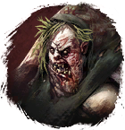

Открыть в интерактивной вики →
| Уровень | 65 |
|---|---|
| Сила (PvE) | 2999 |
| Аспект | Farao |
| Здоровье | 12 000 |
| Мана | 4000 |
| Выносливость | 4000 |
Локация
- Лес Колдов (Ивент Саны)
- Лес Колдов — ивент Неприятности Саны
- Лес Колдов
Дроп


Умения
 Бросок камнем Бросок камнем
Бросок камнем Бросок камнем- Удар в живот — отупление, булавка в глаз, явление смерти, укол куклы, ярость, отравление